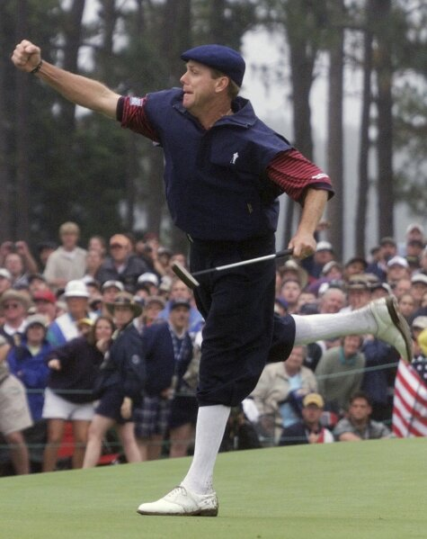

About This Website:
This site will go over the history of the US Open golf championship, it's best moments and why its so special.
The US open, the paramount golf championship in the United States. This is a true test to even the greatest golfers on the planet. This year, it was playing over 7,300 yards, with undulating fairways and inches thick rough that made it impossible for even the greatest ballstrikers on the planet to get out of. This has been the normal in terms of playing conditions when it comes to the history of the US Open. This storied championship, unlike other majors, is open, meaning even your local club champion can qualify to play here, theoretically, if youre good enough, even you can. The US open played its innogural torunament in 1895, and in its nearly 125 year history one thing is true of every year its been played, and that is its intense difficulty. "Nobody wins the Open. It wins you." -- Cary Middlecoff, on the U.S. Open